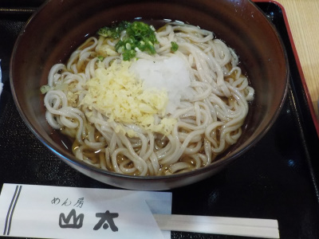

出雲うどんを食べに行きました。
2019/09/15
大社の観光センターいずも横の、お食事処いずもで山太の出雲うどんが食べれると知ったので食べに行きました。

今日は暑かったので冷やしかけうどんでいただきました。（この写真は大盛）
メンが細くてツルツルです。でもコシはしっかりとありました。
麺が細いので冷麦のような冷麺のような感じもしましたが、味はしっかりうどん味でした。
細麺で食べやすい。ダシも絡みやすく美味しい。なんで今までこんなうどうんなかったんだろう？って思いました。
次は暖かいうどんを食べに行きたいと思います。